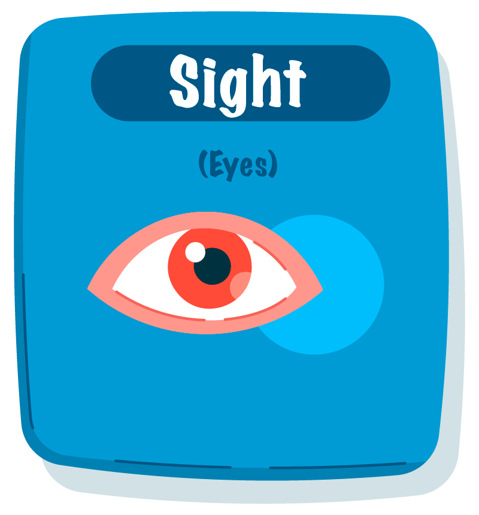
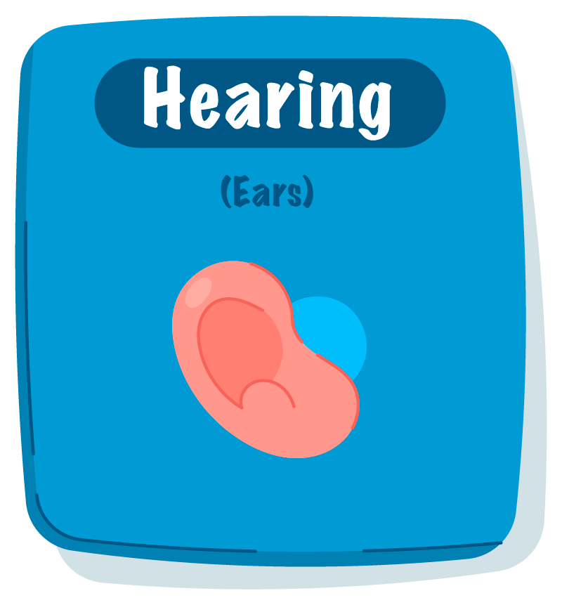
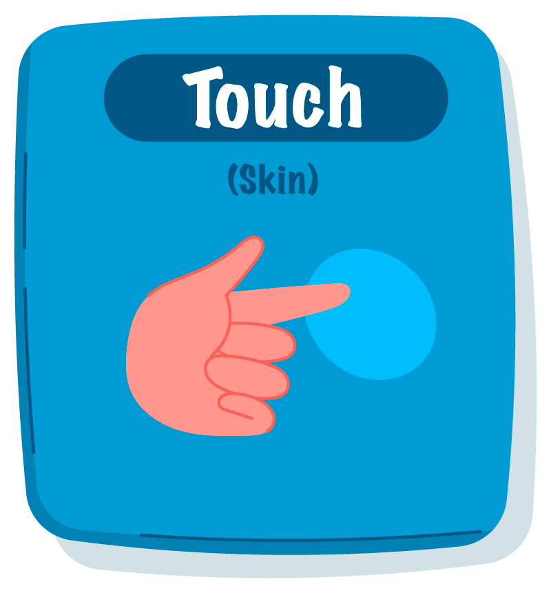

Welcome to my inspirations page! Here you'll find a curated collection of design resources, creative references, and materials that inspire my work. This space showcases the influences that shape my design thinking and creative process.
From innovative design systems to groundbreaking user experiences, these resources represent the cutting edge of design and technology. Each element here has contributed to my growth as a designer and continues to inform my approach to creating meaningful digital experiences.

The human visual system is incredibly complex, allowing us to perceive a wide range of colors, shapes, and movements with remarkable precision and depth.

The human auditory system is highly sensitive to variations in sound frequency, amplitude, and timing, enabling us to perceive and interpret complex audio information.

The human sense of touch is incredibly sophisticated, allowing us to perceive texture, temperature, and pressure with remarkable precision.